当前所在：首页 > 品牌魅力 > 平牌故事
From the food legend of Kowloon city, Hong Kong
源“ 自 ”香港九龍城的美食傳奇
1982年，家住香港九龙城寨的梁正新与妻子，开了家鸡排店，店名为「正新良品」鸡排，夫妇俩凭借真材实料和过硬的手艺，生意蒸蒸日上。梁正新并不满足眼前的成绩，他潜心研究鸡排配方，并远赴美国学习，最终研制出让鸡排「鲜辣香嫩脆」五味俱全的神奇配方。口感提升后，店里生意十分火爆，几十平的店子四季客满，门口常年排队，不少市民从湾仔、旺角等地赶去九龙城，只为一品梁氏夫妇的鸡排。梁氏夫妇宅心仁厚，深受街坊们爱戴，偶尔碰到经济拮据的街坊，通常都是慷慨相送，这一来，就是9年。
1991年，长期劳累的梁正新渐感身体不适，与爱人商量后决定关掉门店，二人移民加拿大疗养，关店的前一天，梁氏夫妇做好最后一批鸡排，挨家挨户的送给那些老街坊们，一来感谢他们这些年的支持，二来跟他们道个别。临走那天虽天降大雨，许多街坊们却相约来到机场，送别夫妇二人。之后的数年间，梁正新夫妇二人一直在国外静心疗养，而那家昔日热闹非凡的鸡排店，也几经转让，更在1993年的时候随着九龙城寨的拆除重建而消失不见。1997年，香港回归之后，这里逐渐出现了一些奶茶店、茶餐厅等，可「正新良品」却只能成为回忆。
2018年，家住上海的梁先生，收到叔叔梁正新的来信，他告诉梁先生，自己膝下无子，希望他能把鸡排继承起来，信中还附上了「正新良品」鸡排的详细制作方法和调料配方。梁先生不敢辜负叔叔的厚望，他深知凭一己之力难以撑起，于是找到知名餐饮企业——广州食盟企业管理有限公司，通过食盟公司的运筹布局，采用白羽鸡作为原料，工艺与配料完全遵照梁正新先生当年的做法，并将品牌更名为“白羽正新”，品牌一经推出，便获得了巨大成功。白羽正新不仅旨在为全国吃货奉上最正宗的港式鸡排，也为更多有志之士提供创富机会。
 網站地圖
網站地圖